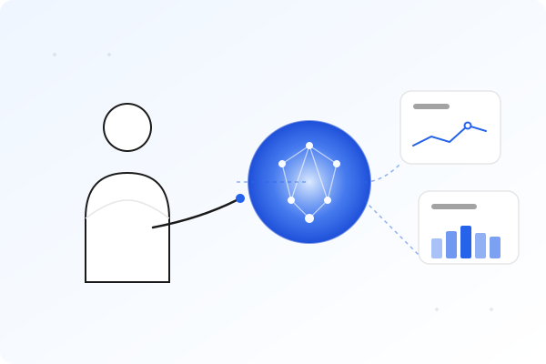

MaKIT으로
비즈니스 성장을 가속화하세요
Human.Ai.D의 MaKIT은 데이터 통합부터 예측 분석까지
마케팅의 모든 과정을 AI로 자동화하는 통합 플랫폼입니다

Human.Ai.D의 MaKIT은 데이터 통합부터 예측 분석까지
마케팅의 모든 과정을 AI로 자동화하는 통합 플랫폼입니다

여러 채널의 마케팅 데이터를 통합하고 분석하는 것이 어렵습니다
반복적인 마케팅 업무로 인해 전략적 사고에 집중할 시간이 부족합니다
어떤 채널에 예산을 집중해야 할지 명확한 근거가 부족합니다
고객 개별 특성에 맞는 맞춤형 마케팅 실행이 어렵습니다
MaKIT은 Amazon Bedrock과 AWS 인프라를 활용하여 마케팅 콘텐츠 생성부터 캠페인 최적화까지 전 과정을 자동화합니다. Java와 Spring Boot로 개발된 확장 가능하고 안전한 솔루션입니다.
데이터 통합, 파이프라인 설계, 시각화, 자연어 기반의 분석 및 인사이트 추출, ML 모델을 활용한 예측분석까지 데이터 분석을 위한 모든 솔루션
Learn More
AI 기반의 창의적인 콘텐츠 생성, 이미지 처리 및 자동 편집, 캠페인 최적화 및 성과 분석, 마케팅의 모든 단계를 자동화
Learn More

즉시 사용 가능한 사전 구성된 모듈로 빠르게 시작합니다
AWS의 강화된 보안으로 데이터와 개인정보를 철저히 보호합니다
비즈니스 성장에 맞춰 탄력적으로 확장할 수 있습니다
Claude, Titan, Stable Diffusion 등 최첨단 AI 모델을 활용합니다